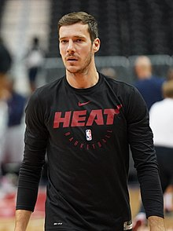

Goran Dragic (1986 5월 6일 출생)는 슬로베니아어 전문 농구에 대한 선수 마이애미 히트의 전국 농구 협회 (NBA). "The Dragon " 이라는 별명을 가진 그는 2008년 NBA에 들어가기 전에 슬로베니아와 스페인에서 프로 농구를했다. Dragić는 Phoenix Suns 와 Houston Rockets 에서도 뛰었습니다 . 그는 2014 년 All-NBA 3 팀 선발 및 NBA 가장 향상된 선수 로 선정 되었습니다. 그는 2018 년 마이애미에서 처음으로 NBA 올스타에 선정 되었습니다. 그는 슬로베니아 국가 대표팀을 이끌고2017 년 첫 FIBA EuroBasket 타이틀에 올랐으며 토너먼트 에서 가장 가치있는 선수로 선정되었습니다 . 
ㅓ머니아러민 ㄹ먼 마너 ㅁ ㄴㅇ러ㅏㅁㄴ ㄹ 먼ㅇ라먼ㅇ리ㅏ먼ㅇ ㄻ넝리ㅏ먼이ㅏ럼니아러ㅐ압 ㅓㅣ얼미ㅏㅓㄴㄷ림ㄴㅇ ㄹ마ㅓ야ㅔㅏ럼ㄴㅇ